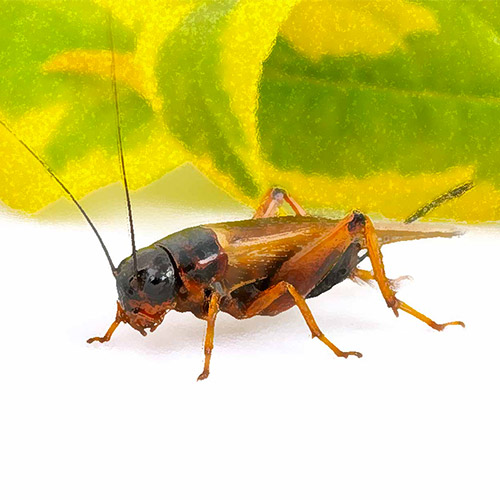
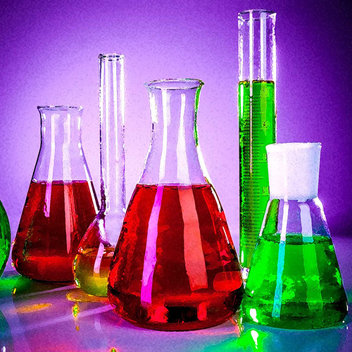
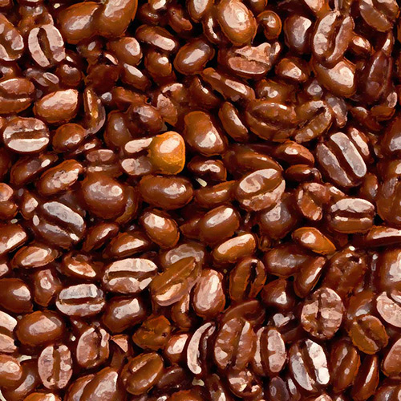
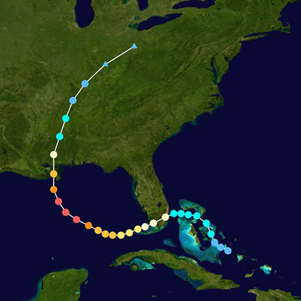

- Equivalent Graphs
When is one graph the same as another, even if it doesn’t look the same? Can graphs that look the same, be different?
- Interpolation
On a warm summer evening, can a cricket and a little math tell the temperature?
- Independent and Dependent Variables
You’ve done the experiment, you have the data, and now you need to make the graph.Which variable goes on the x-axis and which one goes on the y-axes?
- Graphs Tell a Story
Can you read a graph like it was a story? Can you hear a story and make a graph that tells it?
- Hurricane Katrina
Can comparing data from several graphs tell the story about why Hurricane Katrina was so destructive?
- Growing Up
How do you know your average growth rate? What does a "growth spurt" look like on a graph?